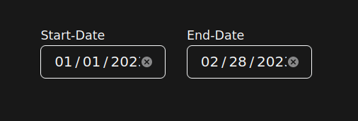

Open Telemetry
This is an open source tool used to monitor SMSWithoutBorders statistics.
We use this data to provide and improve SMSWithoutBorders.
How To Use
Type Category
Signed-up Users - See number of sign ups
Available Users - See number of all available users
Published - See the total number of all messages sent using SMSWithoutBorders
Filters
Month - See all data in months format
Day - See all data in days format
Date
Start Date - Pick the date you want the data to fetch from
End Date - Pick the date you want the data to end
Example - To see data for just January and Feburary

© 2023 - SMSWithoutBorders .